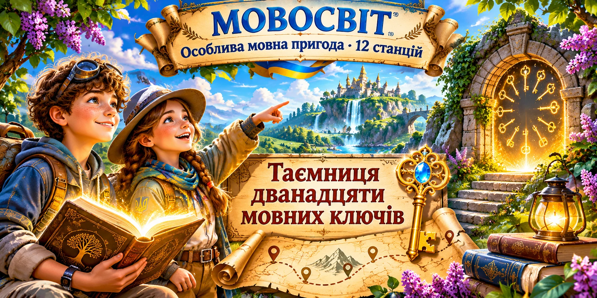
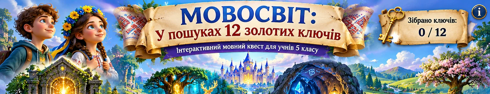
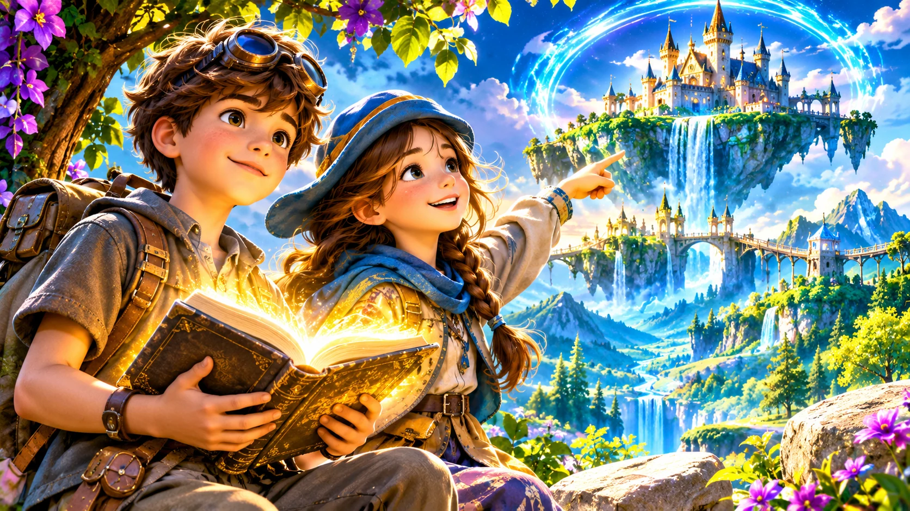
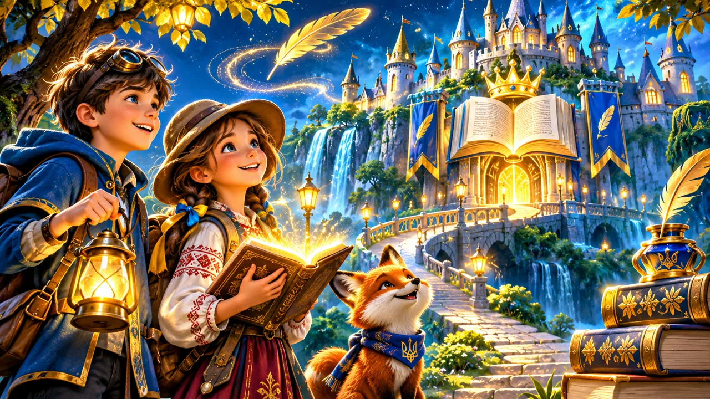
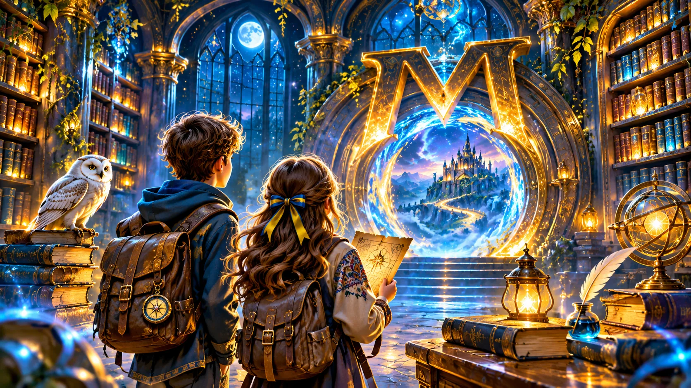
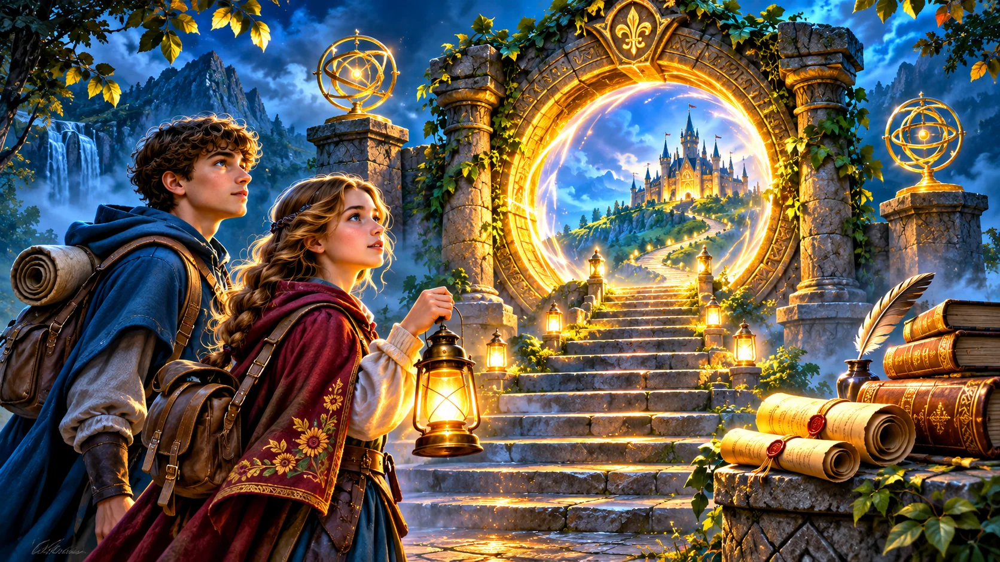

Особлива мовна пригода · 12 станцій
Таємниця дванадцяти мовних ключів
Дванадцять ключів відчинять скарбницю мовної мудрості. Здобудь їх у пригоді для уважних знавців української мови.
Розпочати пригодуШість пригод, по 12 станцій у кожній. Оберіть свій маршрут!

Особлива мовна пригода · 12 станцій
Дванадцять ключів відчинять скарбницю мовної мудрості. Здобудь їх у пригоді для уважних знавців української мови.
Розпочати пригоду
5 клас · 12 станцій
Знайди дванадцять золотих ключів, виконавши мовні завдання на кожній станції.
Розпочати пригоду
6 клас · 12 станцій
Королівська книга втратила дванадцять печаток. Вирушай на пошуки й поверни словам їхню силу.
Розпочати пригоду
7 клас · 12 станцій
Дванадцять кристалів знань допоможуть відновити світло мовного лабіринту.
Розпочати пригоду
8 клас · 12 станцій
Поверни голос дванадцяти дзвонам синтаксичного міста.
Розпочати пригоду
9 клас · 12 станцій
Віднови дванадцять частин стародавнього мовного сувою.
Розпочати пригоду